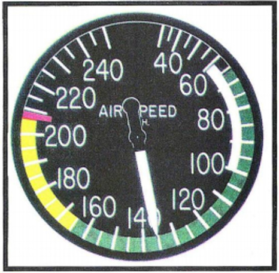

Piloto Privado de Avion
Pregunta 1
¿Cuál es el rango de velocidades para volar con máximo flaps extendido?

Pregunta 2
¿Cuál es el combustible mínimo requerido para cumplir con un vuelo bajo reglas VFR a un destino, sin considerar un lugar de alternativa?